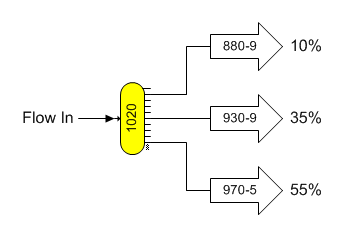
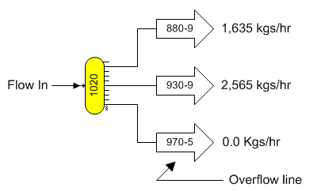
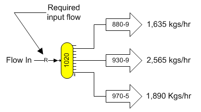
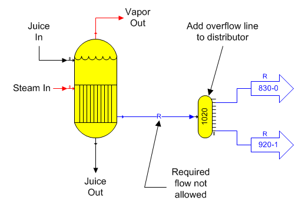

Two methods are available for defining the quantity of flow in each output flow from a distributor station (if none of its output flows are required): (1) by specifying a percentage of the input flow quantity for the quantity of each output flow; or, (2) by specifying a quantity for each output flow. When data is being entered for a new distributor station, if any of the output flows from a distributor are required, only the quantity can be specified for the other output flows that are not required; whereas, if none of the output flows are required, Quantity %, Quantity kg/hr, or Quantity lb/hr can be selected by clicking on the quantity button. In either case, each output flow will have the same pressure, temperature, flow component fractions, color and solubility coefficients as the input flow. The sum of the flow percentages specified for the output flows must total 100%.

The above figure shows the distributor station with percentage values for each output flow as specified on the distributor properties window. None of the output flows from the distributor shown above are required. Therefore, the output flows may be specified to be either a percentage of the input flow (as shown), or a quantity. Each output flow will have the same pressure, temperature, flow stream components, color and solubility coefficients as the input flow.

The above figure shows the distributor station with flow stream quantities for each output flow. The output flow stream going to station no. 880 (input port 9 on station no. 880) does not have a specified quantity and it is the overflow line for the distributor. Any quantity of input flow, which exceeds the sum of the specified output flow quantities, will be sent down the overflow line. An overflow line does not apply when percentage values are used.
It is always possible to switch from weight quantity to percentage quantity by clicking the left mouse button on the "Quantity kg/hr", or "Quantity lb/hr". And, to switch from quantity in percent (%) to weight quantity, click the left mouse button on the "Quantity %" button. Sugars will zero out any entries in any of the fields when switching between quantity and percent. Sugars will not allow a switch from weight quantity to percent if any of the flows out of the distributor are required flows (it is not possible to have required and percent flows intermingled).
A distributor station can be used to set the quantity of flow going to another station (or out of the model). If all of the output flows from the distributor are specified to have a quantity greater than 0.0, the input flow to the distributor will become a required flow.

The figure above shows a required input flow into the distributor because all of the output flows have a specified quantity.
A distributor station can have output flows required by other stations. For example, steam flow to a pan, wash water flow to a centrifugal, heating flow to a heater where a specified temperature change has been requested, heating flow to a melter with a specified output flow temperature, etc. If all of the output flows from the distributor are required, the input flow to the distributor will be required. If the flow to the distributor is from an external source (i.e., it is an external flow), Sugars will automatically calculate the quantity of flow that must flow into the model from the external source to satisfy all of the required flows leaving the distributor. If the flow into the distributor comes from another station, then Sugars will force the quantity of flow from the other station to equal the required quantity for the distributor station. This feature can cause a conflict if the quantity of flow from the originating station does not equal the quantity of the required flow for the distributor; for example, condensate flow from an evaporator body does not exactly equal the wash water flow required by a centrifugal station. Distributor stations can avoid this conflict by using an overflow line out of the distributor to allow excess flow, beyond what is needed by the required output flows from the distributor, to go to another station, or out of the model.
The figure below shows an evaporator station with a distributor station on the condensate line leaving the evaporator with two output flows that are both required. Because all of the flows out of the distributor are required, Sugars will make the input flow into the distributor required; however, condensate flow from an evaporator station cannot be a required flow; hence, Sugars will give an error message if this occurs.

Adding an overflow line to a distributor station will prevent Sugars from making the flow into the distributor a required flow; so that flow from the originating station does not have to equal the quantity of all required flows out of the distributor and any excess can be directed elsewhere.
A distributor can have both specified and required output flows. If the input flow to the distributor station comes from an external source (i.e., it is an external flow), then all of the output flows from the distributor can be specified and/or required. The quantity of the input flow will be adjusted automatically by Sugars to satisfy all of the output flow quantities; however, if the flow into the distributor is from another station and all of the output flows are specified and/or required, then the input flow will be made required by Sugars if the station supplying the distributor can have a required flow. If the supplying station cannot have a required flow, Sugars will give an error on the error message box and the balance calculations may not be possible. Generally, having an extra flow line leaving the distributor to act as an overflow line is best unless the flow into the distributor is an external flow, or it comes from another distributor station that has an overflow line.
If the flow into the distributor from another station is not sufficient to satisfy the required and specified output flows, Sugars will reduce the specified flows until the input and output flows are balanced (Sugars will give a warning/comment message if this occurs). If reducing the quantity of flow for any required flows is necessary, the heat and material balance will not be possible and Sugars will give an error message that a balance was not achieved.